Matching looks — round 4
The last of the places where the app draws the same kind of thing two ways, and the icons. Nothing is changed yet: each waits for your answer.
In every picture the amber ring marks the place. Today is the app as it is. Drawn is the change drawn on the real app. Tap any picture to enlarge it. The pictures come from a test browser, which draws ⚙ 📅 📱 🖥 ✋ 🗑 📋 as plain marks; your iPhone draws them in colour, as this line may show you.
Your four questions
- Legends — four ways today. Recommended: leave all four.
- Inputs calendar on a laptop-sized screen — the gear drops alone onto a second line. Recommended: keep it with the filters, and the search box a little narrower.
- Typed marks on the Scheduler Board and the Leave War. Recommended: the app's line icons — and, after your catch, OIL gets a mark of its own (B, a ticket), not History's clock.
- Typed marks on the Tracker. Recommended: the app's line icons.
"All as recommended" answers all four. Below them: the gear and the calendar, which you have already ruled, drawn so you can see them before they are built.
Changed since you first looked: OIL Earn redrawn after your catch (it had History's clock); a fresh design check's points taken — the gears drawn white like the icons beside them, two Tracker look-alikes redrawn, and question 2's narrower search box kept to the widths where it saves the line, with close-ups you can read on your phone.
1The legends
Four pages have a legend, shown four ways:
- Edit Schedule — "Legend — colours & flags" unfolds in place, two rows of flags on your PC, a long block on a phone. You ruled it stays a fold on its own row (D926).
- Leave War and Tracker — a "Legend" button opens the same panel, "What the grid (chart) is telling you". These two already match.
- Inputs and SANS calendars — two or three colours, always in view at the right of the row.
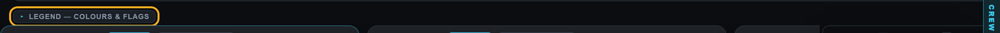
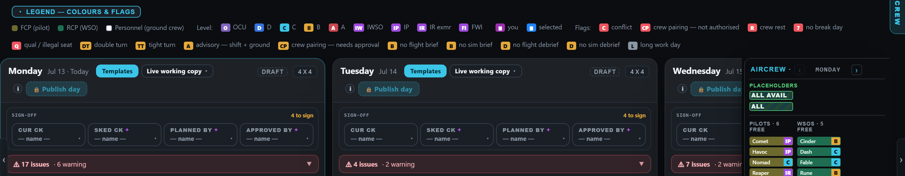
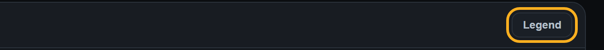
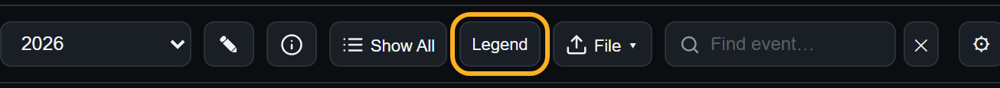
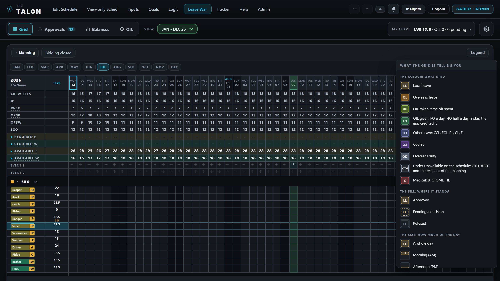
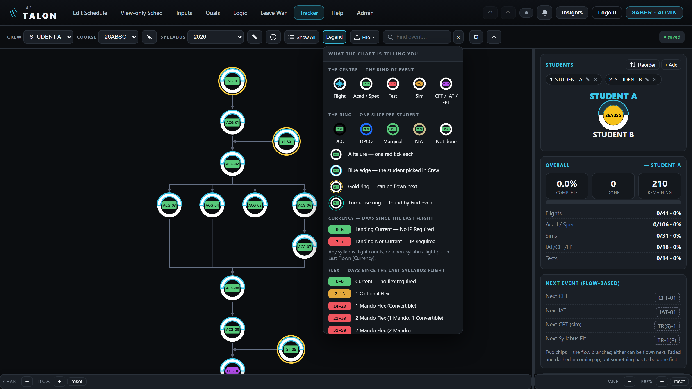
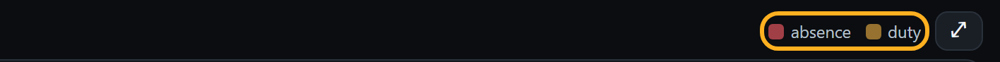
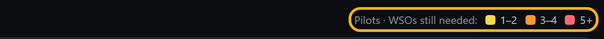
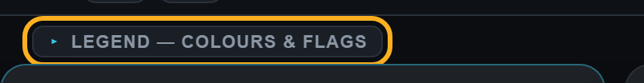
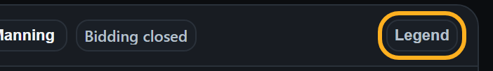
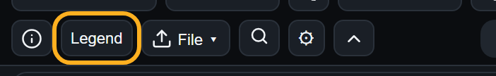
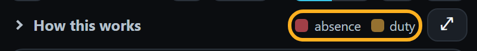
Recommended: leave all four as they are. They follow one rule already: a long legend sits behind a "Legend" button (or Edit Schedule's fold, as you ruled), and a short key of two or three colours stays in view, where hiding it would only add a tap.
The other way: Edit Schedule's legend also becomes a "Legend" button with the same panel as the Leave War's. The schedule gains back the fold's row, but its flags move a tap away, and it changes your D926. If you want it, I will draw it first.
2The Inputs calendar on a laptop-sized screen
At 1366 wide (a common laptop) the gear does not fit on the top row, so it drops alone to the far left of a second line, and the calendar loses a whole row. At 1300 the filters and the gear move down together, which is tidy. On your PC (1536) everything fits.
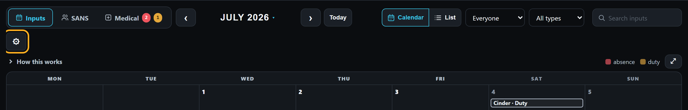
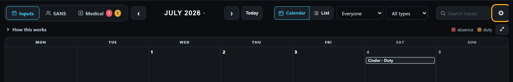
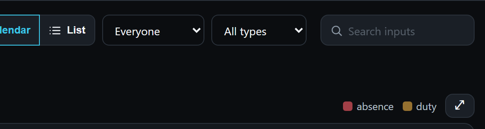
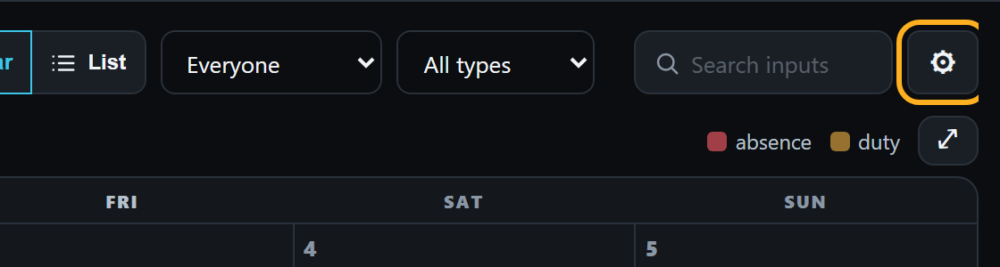
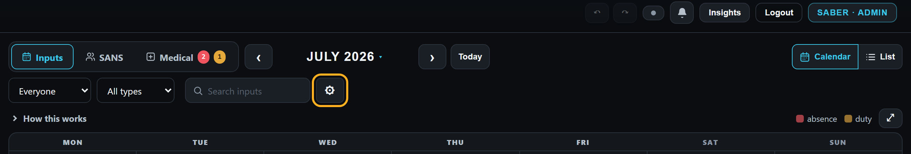
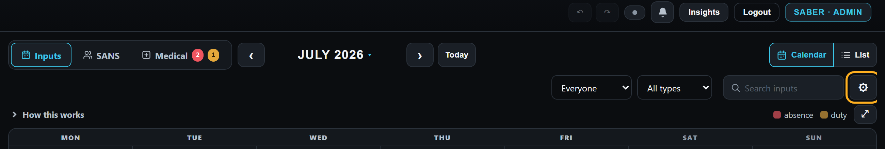
Recommended: the filters and the gear always move together, at the row's right end, so the gear never stands alone and keeps its corner at every width; and between 1340 and 1439 wide the search box is a little narrower (135 → 102), "Search inputs" still whole, so 1366 stays on one line. A callsign or "Appointment" fits as you type; a longer search scrolls inside the box.
Measured: on a laptop whose letters are drawn about a seventh wider, 1366 goes to two lines after all — but tidily, the filters and gear together. Unchanged: your PC and the phone. An open input's window covers the bottom of the gear at every width, as it does on your PC today; it can still be pressed.
3Typed marks on the Scheduler Board and the Leave War
Most buttons in the app carry a drawn line icon (Edit Schedule's calendar, the Leave War's tabs, the Tracker's Reorder). These still carry a typed symbol: ⇅ Sort all, ▤ Templates, ◧ OIL Earn and ⇅ Auto sort on the board; 📱 / 🖥 in the board's phone menu (coloured pictures on your iPhone); ⇅ Rearrange the grid, ↺ Reset order and ⇅ Done on the Leave War.
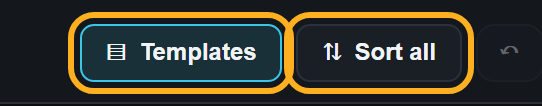
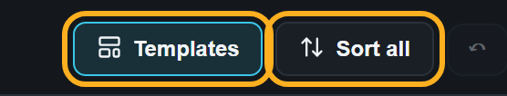
3b — OIL Earn: your catch
The first drawing gave OIL Earn the Leave War's OIL clock, beside History's clock on the same bar. Two other ways, drawn on Saturday's board with History in view:
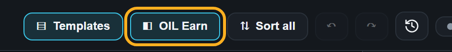
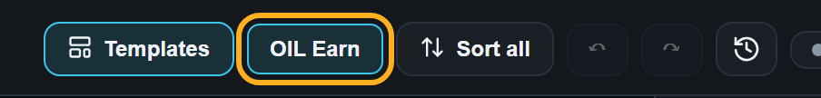
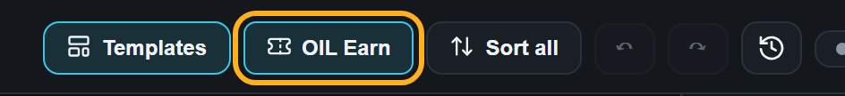
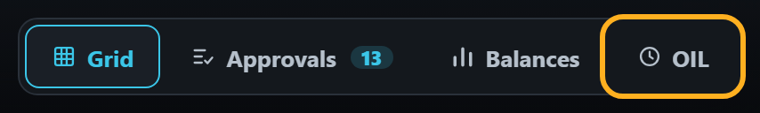
3a — the other marks
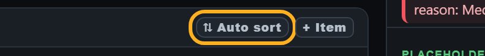
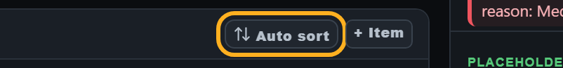
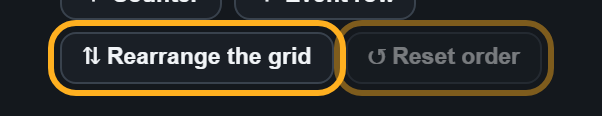
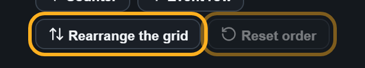
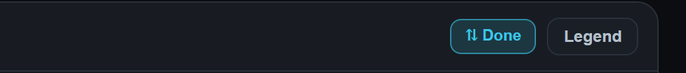
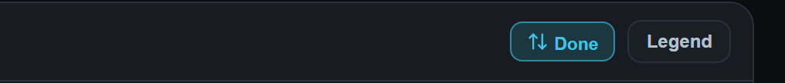
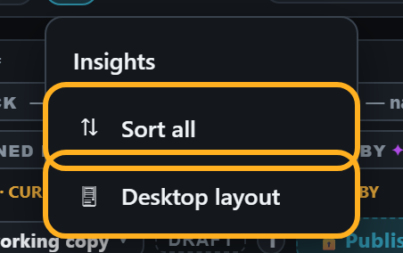
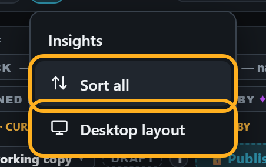
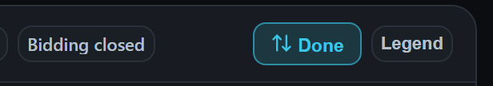
3a recommended: the app's line icons. Every ⇅ takes the Tracker's Reorder mark. Three marks are new, drawn in the same style: Templates (a page of blocks), Reset order (an arrow turning back — History's arrow without its clock, meaning "put back", as the Tracker's Reset layout), and a phone and a screen for the layout switch.
3b recommended: B. Every other button on that bar has a mark, so a ticket keeps the bar alike, and OIL then has one mark on both pages while a clock means only History. A, words alone, is the plainer way, and leaves the Leave War's OIL tab with its clock.
4Typed marks on the Tracker
Edit chart layout's tools (✋ Move, ▣ Select, → Connect, 🗑 Delete, ╱ Line, ❐ Edit lines, ➤ Arrow, ✕ Merge, ⌢ Unmerge, ▣ Select all, ⤢ Fit, ↺ Reset layout, 📋 Edit events) and the lull periods' ⧉ Copy to… still carry typed symbols — ✋, 🗑 and 📋 are coloured pictures on your iPhone. Its Text tool already has your drawn pencil.
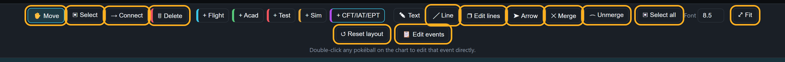
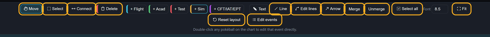
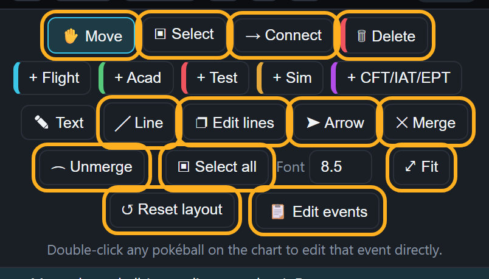
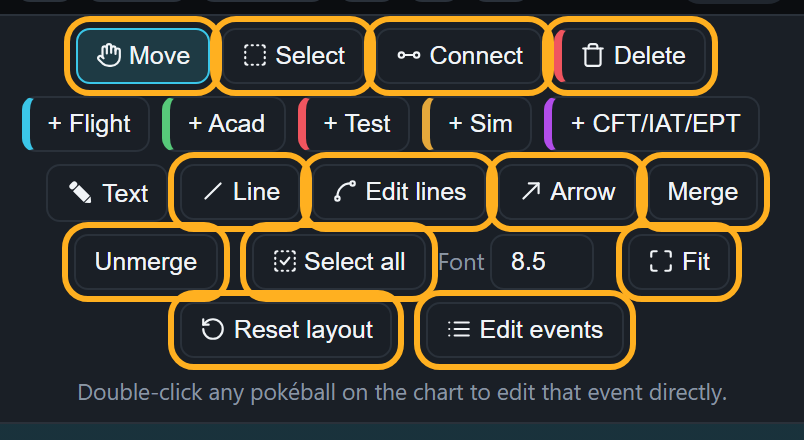
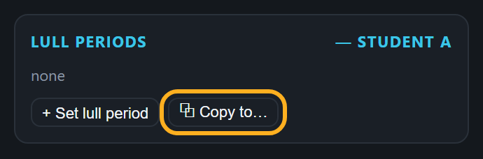
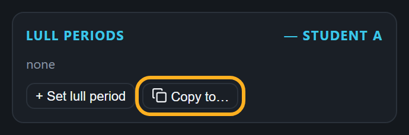
Recommended: the app's line icons. Copy, Delete and Edit events take the Tracker's own copy, bin and list marks; the rest are new marks in the same style: a hand (Move), a dashed box (Select) and the same box with a tick (Select all), two points joined (Connect), a line (Line), a line with a head (Arrow), a curve between two points (Edit lines), four corners (Fit), an arrow turning back (Reset layout). Merge and Unmerge keep their words alone: no mark that small reads clearly.
A lull period's × takes the drawn ✕ the Students card uses. The demo has no lull period, so it is not pictured.
Already ruled — drawn before it is built
One gear (D1509). Five places still show the typed ⚙: the Inputs calendar, the SANS calendar, the OIL tracker, the Tracker's flex settings and the board's flying waves. Each takes the Leave War's drawn gear, at its own button's size. Each is drawn in the colour of the icons beside it — white on the Inputs, SANS, Tracker, OIL tracker and board rows; the Leave War's stays grey, like its tabs. (The list said the Leave War's gear is cyan; on screen it is grey.) The SANS calendar's gear was not in your ruling's list; it is included, as the ruling covers "wherever it stands".
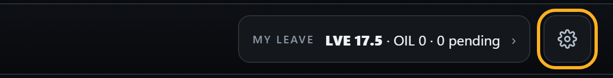
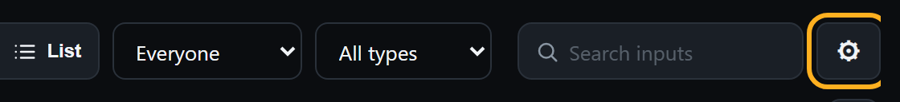
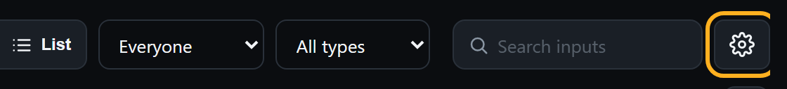
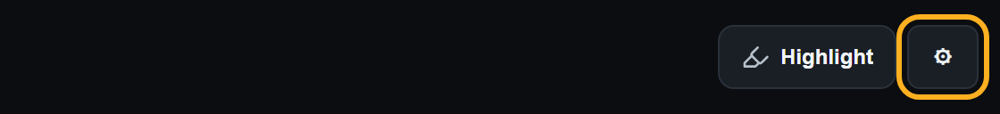
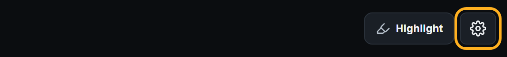
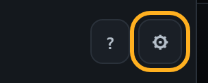
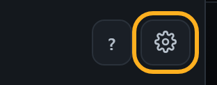
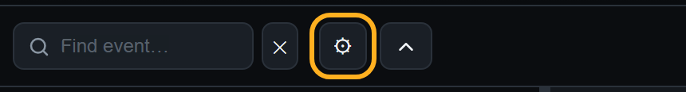
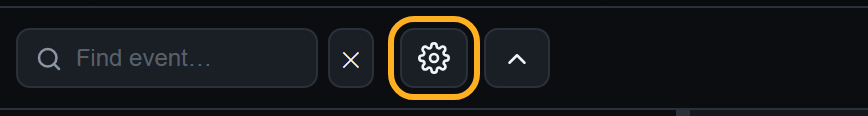
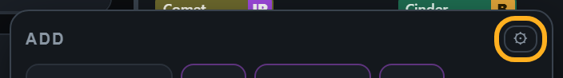
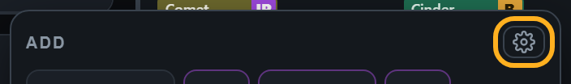
One calendar (D1508). The OIL tracker's RANGE button is the last 📅 in the app; it takes Edit Schedule's calendar.
If any of these looks wrong, say so; otherwise they are built as drawn, with your answers to 1–4.
Looked at and left
- Undo ↶ and Redo ↷: the top bar's own arrows, the same on every page (your D347, D1126).
- "⇄ Move" in the Leave War's sheets: drawn so on purpose, its arrow in the move colour (your D334).
- The date picker's "today" button, a calendar showing today's number: your own request, and a different job from opening a calendar.
- The ✕ that closes a window, the ▸ on a fold, ⚠ before an issue count, ⓘ marking an info-only item, the number pad's ⌫, Quals' drag grip ⋮⋮: each one look wherever it appears.
- For the next round: the 👁 before "Viewing plan" (a coloured picture on your iPhone) and the Inputs calendar's ⤢ "Show every input" button.